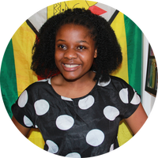
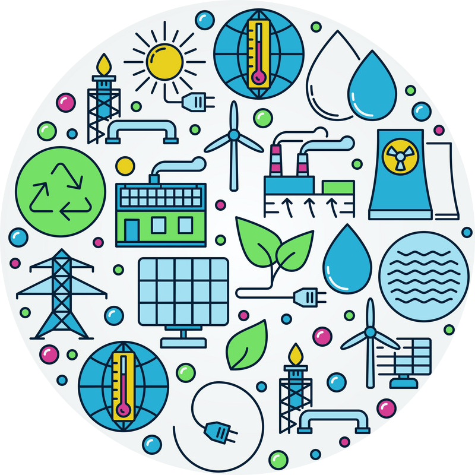
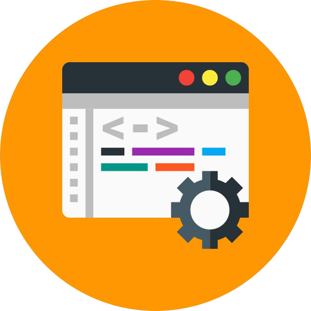
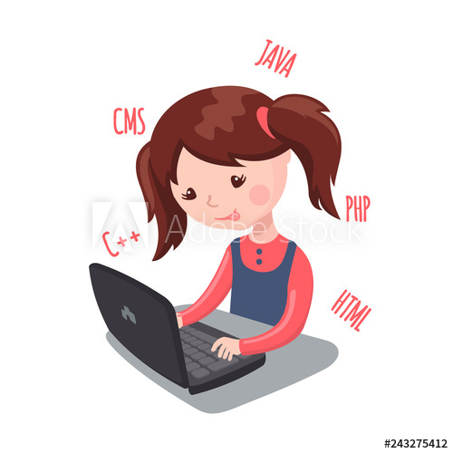

Hello.
I am a rising senior at Smith College, Northampton, Massachusettes.
I am keen about renewable energy generation, distribution & storage.
My long term goal is to become a policy maker in the power industry and to be able to
create policies that will enable everyone to have access to clean power and energy.
I also have a strong desire to empower young women and girls to rise above their circumstances and get skills that will
enable them to become great leaders and pace setters of tomorrow.
My Skills and Interests.

Renewable energy
From a very tender age, I have always had a desire to fix gadgets and troubleshoot problems with appliances in our home.
From fixing broken irons, sockets, DVD players to opening up stoves, and changing fuses in adapters, in a bid to make them work again.
I have also always had a strong desire to solve problems in general and becoming part of a solution.
One of the problems that I saw myself solving was the lack of reliable and renewable electricity in many parts of the world.
In an attempt to be a solution to this problem, I am persuing a degree in Electrical engineering and hopefully one day I will be able to make an impact.
I want to be a policy maker and make policies that will enable even those in marginalized places to have access to electricity.
During the summer of 2019, I interned at Reclon Consulting engineers where I gained invaluable skills as an electrical engineering intern.
I am conversant with AutoCAD, MATLAB, Solid works, Spice(Eagle), Soldering, Revit, Blender, Laser Cutting and RStudio.

Programming
During the summer of 2017, I took a programming class which spiked my interest for writing code.
Ever since then, I have always had a strong desire to learn more about programming.
I am a self taught front end web developer and programmer. I have developed skills in HTML, Bootstrap, CSS, Java, Javascript, Python, C/C++ and Arduino.
I collaborated with a few friends in building the ZiFarm Website. I love writting code and creating websites during my spare time.
I have also collaborated with collegues from school in coding games like; hangman, spooky mansion, Afric_travel, Aquarium,
and fish grid all of which can be found on my github.

Women and Girl empowerment
I love mentoring and inspiring young girls to achieve their goals to reach their full potential.
I have always dreamt of empowering the girl child & believe she is capable of achieving great things given the opportunity to do so.
I am a recepient of the Davis Projects for Peace grant that enabled me to start a mentorship program
called Girls in Robotics for young girls who are interested in STEM in Zimbabwe.
Girls in Robotics empowers young girls through teaching them Robotics, Programming and electronics.
During the Girls in Robotics bootcamp, girls were taught how to assemble robots, write Arduino code for them
as well as make them work electrically and mechanically.
Girls in Robotics educates young girls empowers them to be able to make a change in their respective communities.